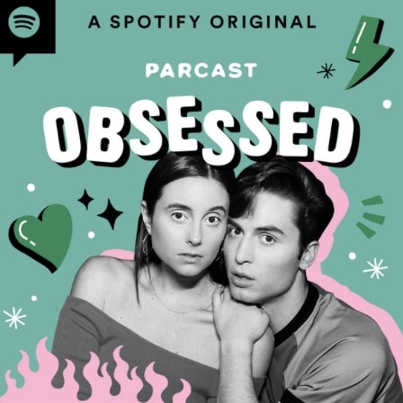
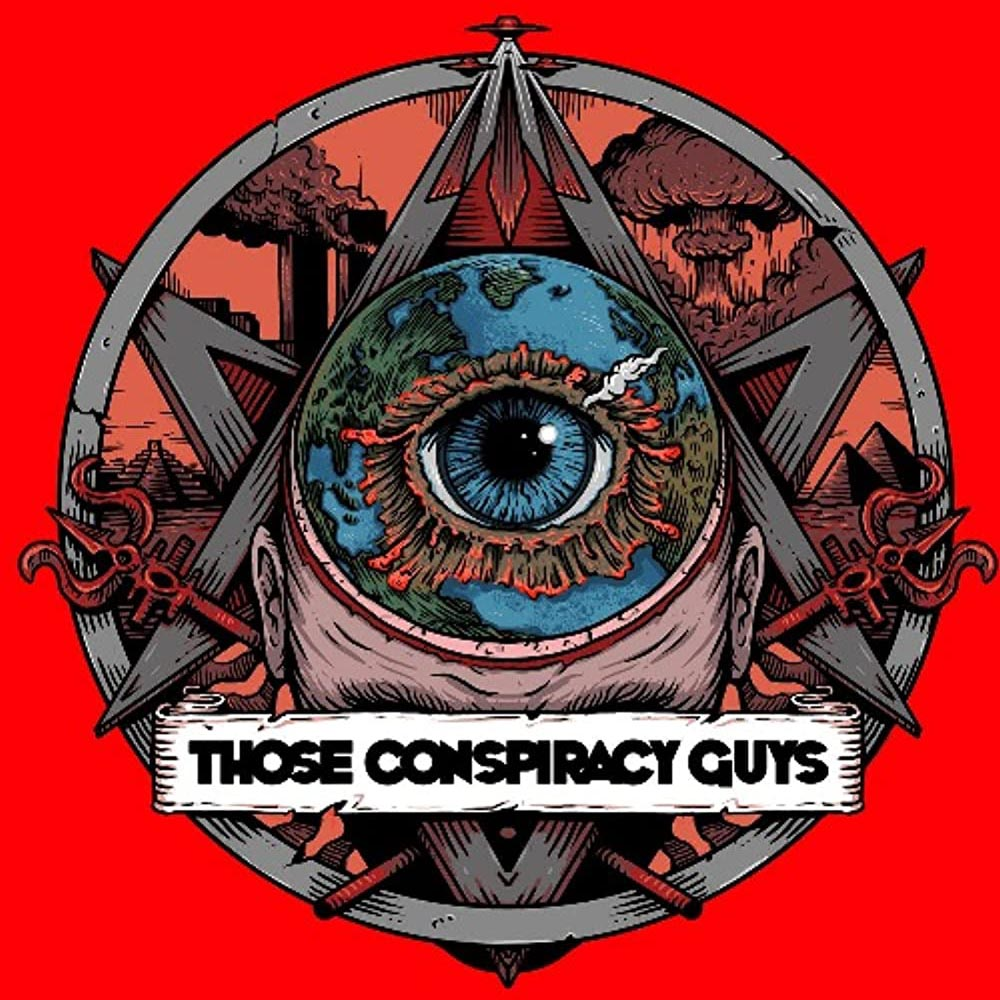

About
The media can be an interesting source of information. There are so many claims coming from everywhere that it can be hard to differentiate facts from false claims. Additionally, internet trolls tend to get mixed into this on occasion, spreading more believable lies all over. Somewhere in the middle of all of this, people start doing their own investigations on whether the topic truly is fact or not. Celebrity conspiracy theories range from believable to absolute b.s., but who are we to say who’s right and who’s wrong? They are conspiracies for a reason. Some of the most popular celebrity conspiracies focus on imposters. Many people think that some of the biggest stars died and were replaced by doppelgangers.
Members

Paul McCartney
Read MorePodcasts & Music
-

Obsessed: ...Avril Lavigne Conspiracy
Tune into a Spotify Original podcast discussing the Avril Lavigne Conspiracy.
-

Those Conspiracy Guys: Paul McCartney Is Dead
Listen now to a podcast discussing a conspiracy involving one of The Beatles members.
-
Spotify: This is Avril Lavigne
-
Spotify: This is Paul McCartney